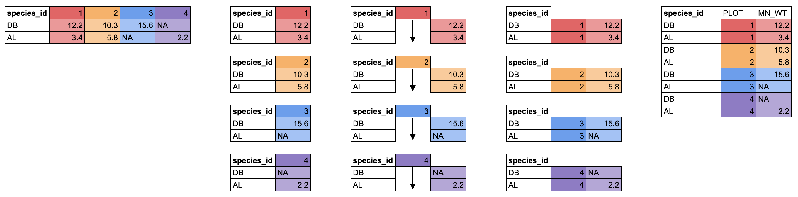

4 Manipulating Tabular Data
Authors: Data Carpentry contributors - Copyright (c) Data Carpentry; Ed Stowe (adaptation for USACE); Brian Breaker (for loop and function code)
Last update: 2025-02-12
Acknowledgements: The bulk of this section is adapted from the Data Carpentry course Data Analysis and Visualization in R for Ecologists which is licensed under CC-BY 4.0 by the authors
4.1 Learning Objectives
- Import CSV data into R.
- Understand the difference between base R and
tidyverseapproaches. - Subset rows and columns of data.frames.
- Use pipes to link steps together into pipelines.
- Create new data.frame columns using existing columns.
- Utilize the concept of split-apply-combine data analysis.
- Reshape data between wide and long formats.
- Export data to a CSV file.
4.2 Importing data
Up until this point, we have been working with the complete_old dataframe contained in the ratdat package. However, you typically won’t access data from an R package; it is much more common to access data files stored somewhere on your computer. We are going to download a CSV file containing the surveys data to our computer, which we will then read into R.
Click this link to download the file: https://datacarpentry.org/R-ecology-lesson/data/cleaned/surveys_complete_77_89.csv.
You will be prompted to save the file on your computer somewhere. Save it inside the cleaned data folder, which is in the data folder in your R-Ecology-Workshop folder. Once it’s inside our project, we will be able to point R towards it.
4.2.0.1 File paths
When we reference other files from an R script, we need to give R precise instructions on where those files are. We do that using something called a file path. It looks something like this: "Documents/Manuscripts/Chapter_2.txt". This path would tell your computer how to get from whatever folder contains the Documents folder all the way to the .txt file.
There are two kinds of paths: absolute and relative. Absolute paths are specific to a particular computer, whereas relative paths are relative to a certain folder. Because we are keeping all of our work in the R-Ecology-Workshop folder, all of our paths can be relative to this folder.
Now, let’s read our CSV file into R and store it in an object named surveys. We will use the read_csv function from the tidyverse’s readr package, and the argument we give will be the relative path to the CSV file.
surveys <- read_csv("data/surveys_complete_77_89.csv")## Rows: 16878 Columns: 13
## ── Column specification ─────────────────────────────────────────────────────
## Delimiter: ","
## chr (6): species_id, sex, genus, species, taxa, plot_type
## dbl (7): record_id, month, day, year, plot_id, hindfoot_length, weight
##
## ℹ Use `spec()` to retrieve the full column specification for this data.
## ℹ Specify the column types or set `show_col_types = FALSE` to quiet this message.Typing out paths can be error prone, so we can utilize a keyboard shortcut. Inside the parentheses of read_csv(), type out a pair of quotes and put your cursor between them. Then hit Tab. A small menu showing your folders and files should show up. You can use the ↑ and ↓ keys to move through the options, or start typing to narrow them down. You can hit Enter to select a file or folder, and hit Tab again to continue building the file path. This might take a bit of getting used to, but once you get the hang of it, it will speed up writing file paths and reduce the number of mistakes you make.
You may have noticed a bit of feedback from R when you ran the last line of code. We got some useful information about the CSV file we read in. We can see:
- the number of rows and columns
- the delimiter of the file, which is how values are separated, a comma
"," - a set of columns that were parsed as various vector types
- the file has 6 character columns and 7 numeric columns
- we can see the names of the columns for each type
When working with the output of a new function, it’s often a good idea to check the class():
class(surveys)## [1] "spec_tbl_df" "tbl_df" "tbl" "data.frame"Whoa! What is this thing? It has multiple classes? Well, it’s called a tibble, and it is the tidyverse version of a data.frame. It is a data.frame, but with some added perks. It prints out a little more nicely, it highlights NA values and negative values in red, and it will generally communicate with you more (in terms of warnings and errors, which is a good thing).
tidyverse vs. base R
As we begin to delve more deeply into the tidyverse, we should briefly pause to mention some of the reasons for focusing on the tidyverse set of tools. In R, there are often many ways to get a job done, and there are other approaches that can accomplish tasks similar to the tidyverse.
The phrase base R is used to refer to approaches that utilize functions contained in R’s default packages. We have already used some base R functions, such as str(), head(), and mean(), and we will be using more scattered throughout this lesson. However, there are some key base R approaches we will not be teaching. These include square bracket subsetting and base plotting. You may come across code written by other people that looks like surveys[1:10, 2] or plot(surveys$weight, surveys$hindfoot_length), which are base R commands. If you’re interested in learning more about these approaches, you can check out other Carpentries lessons like the Software Carpentry Programming with R lesson.
We choose to teach the tidyverse set of packages because they share a similar syntax and philosophy, making them consistent and producing highly readable code. They are also very flexible and powerful, with a growing number of packages designed according to similar principles and to work well with the rest of the packages. The tidyverse packages tend to have very clear documentation and wide array of learning materials that tend to be written with novice users in mind. Finally, the tidyverse has only continued to grow, and has strong support from RStudio, which implies that these approaches will be relevant into the future.
4.3 Manipulating data
One of the most important skills for working with data in R is the ability to manipulate, modify, and reshape data. The dplyr and tidyr packages in the tidyverse provide a series of powerful functions for many common data manipulation tasks.
We’ll start off with two of the most commonly used dplyr functions: select(), which selects certain columns of a data.frame, and filter(), which filters out rows according to certain criteria.
Between select() and filter(), it can be hard to remember which operates on columns and which operates on rows. select() has a c for columns and filter() has an r for rows.
4.3.0.1 select()
To use the select() function, the first argument is the name of the data.frame, and the rest of the arguments are unquoted names of the columns you want:
select(surveys, plot_id, species_id, hindfoot_length)## # A tibble: 16,878 × 3
## plot_id species_id hindfoot_length
## <dbl> <chr> <dbl>
## 1 2 NL 32
## 2 3 NL 33
## 3 2 DM 37
## 4 7 DM 36
## 5 3 DM 35
## 6 1 PF 14
## 7 2 PE NA
## 8 1 DM 37
## 9 1 DM 34
## 10 6 PF 20
## # ℹ 16,868 more rowsThe columns are arranged in the order we specified inside select().
To select all columns except specific columns, put a - in front of the column you want to exclude:
select(surveys, -record_id, -year)## # A tibble: 16,878 × 11
## month day plot_id species_id sex hindfoot_length weight genus species
## <dbl> <dbl> <dbl> <chr> <chr> <dbl> <dbl> <chr> <chr>
## 1 7 16 2 NL M 32 NA Neotoma albigu…
## 2 7 16 3 NL M 33 NA Neotoma albigu…
## 3 7 16 2 DM F 37 NA Dipodomys merria…
## 4 7 16 7 DM M 36 NA Dipodomys merria…
## 5 7 16 3 DM M 35 NA Dipodomys merria…
## 6 7 16 1 PF M 14 NA Perognat… flavus
## 7 7 16 2 PE F NA NA Peromysc… eremic…
## 8 7 16 1 DM M 37 NA Dipodomys merria…
## 9 7 16 1 DM F 34 NA Dipodomys merria…
## 10 7 16 6 PF F 20 NA Perognat… flavus
## # ℹ 16,868 more rows
## # ℹ 2 more variables: taxa <chr>, plot_type <chr>select() also works with numeric vectors for the order of the columns. To select the 3rd, 4th, 5th, and 10th columns, we could run the following code:
## # A tibble: 16,878 × 4
## day year plot_id genus
## <dbl> <dbl> <dbl> <chr>
## 1 16 1977 2 Neotoma
## 2 16 1977 3 Neotoma
## 3 16 1977 2 Dipodomys
## 4 16 1977 7 Dipodomys
## 5 16 1977 3 Dipodomys
## 6 16 1977 1 Perognathus
## 7 16 1977 2 Peromyscus
## 8 16 1977 1 Dipodomys
## 9 16 1977 1 Dipodomys
## 10 16 1977 6 Perognathus
## # ℹ 16,868 more rowsYou should be careful when using this method, since you are being less explicit about which columns you want. However, it can be useful if you have a data.frame with many columns and you don’t want to type out too many names.
Finally, you can select columns based on whether they match a certain criteria by using the where() function. If we want all numeric columns, we can ask to select all the columns where the class is numeric:
## # A tibble: 16,878 × 7
## record_id month day year plot_id hindfoot_length weight
## <dbl> <dbl> <dbl> <dbl> <dbl> <dbl> <dbl>
## 1 1 7 16 1977 2 32 NA
## 2 2 7 16 1977 3 33 NA
## 3 3 7 16 1977 2 37 NA
## 4 4 7 16 1977 7 36 NA
## 5 5 7 16 1977 3 35 NA
## 6 6 7 16 1977 1 14 NA
## 7 7 7 16 1977 2 NA NA
## 8 8 7 16 1977 1 37 NA
## 9 9 7 16 1977 1 34 NA
## 10 10 7 16 1977 6 20 NA
## # ℹ 16,868 more rowsInstead of giving names or positions of columns, we instead pass the where() function with the name of another function inside it, in this case is.numeric(), and we get all the columns for which that function returns TRUE.
We can use this to select any columns that have any NA values in them:
## # A tibble: 16,878 × 7
## species_id sex hindfoot_length weight genus species taxa
## <chr> <chr> <dbl> <dbl> <chr> <chr> <chr>
## 1 NL M 32 NA Neotoma albigula Rodent
## 2 NL M 33 NA Neotoma albigula Rodent
## 3 DM F 37 NA Dipodomys merriami Rodent
## 4 DM M 36 NA Dipodomys merriami Rodent
## 5 DM M 35 NA Dipodomys merriami Rodent
## 6 PF M 14 NA Perognathus flavus Rodent
## 7 PE F NA NA Peromyscus eremicus Rodent
## 8 DM M 37 NA Dipodomys merriami Rodent
## 9 DM F 34 NA Dipodomys merriami Rodent
## 10 PF F 20 NA Perognathus flavus Rodent
## # ℹ 16,868 more rows
4.3.0.2 filter()
The filter() function is used to select rows that meet certain criteria. To get all the rows where the value of year is equal to 1985, we would run the following:
filter(surveys, year == 1985)## # A tibble: 1,438 × 13
## record_id month day year plot_id species_id sex hindfoot_length weight
## <dbl> <dbl> <dbl> <dbl> <dbl> <chr> <chr> <dbl> <dbl>
## 1 9790 1 19 1985 16 RM F 16 4
## 2 9791 1 19 1985 17 OT F 20 16
## 3 9792 1 19 1985 6 DO M 35 48
## 4 9793 1 19 1985 12 DO F 35 40
## 5 9794 1 19 1985 24 RM M 16 4
## 6 9795 1 19 1985 12 DO M 34 48
## 7 9796 1 19 1985 6 DM F 37 35
## 8 9797 1 19 1985 14 DM M 36 45
## 9 9798 1 19 1985 6 DM F 36 38
## 10 9799 1 19 1985 19 RM M 16 4
## # ℹ 1,428 more rows
## # ℹ 4 more variables: genus <chr>, species <chr>, taxa <chr>, plot_type <chr>The == sign means “is equal to”. There are several other operators we can use: >, >=, <, <=, and != (not equal to). Another useful operator is %in%, which asks if the value on the lefthand side is found anywhere in the vector on the righthand side. For example, to get rows with specific species_id values, we could run:
## # A tibble: 2,835 × 13
## record_id month day year plot_id species_id sex hindfoot_length weight
## <dbl> <dbl> <dbl> <dbl> <dbl> <chr> <chr> <dbl> <dbl>
## 1 68 8 19 1977 8 DO F 32 52
## 2 292 10 17 1977 3 DO F 36 33
## 3 294 10 17 1977 3 DO F 37 50
## 4 311 10 17 1977 19 RM M 18 13
## 5 317 10 17 1977 17 DO F 32 48
## 6 323 10 17 1977 17 DO F 33 31
## 7 337 10 18 1977 8 DO F 35 41
## 8 356 11 12 1977 1 DO F 32 44
## 9 378 11 12 1977 1 DO M 33 48
## 10 397 11 13 1977 17 RM F 16 7
## # ℹ 2,825 more rows
## # ℹ 4 more variables: genus <chr>, species <chr>, taxa <chr>, plot_type <chr>We can also use multiple conditions in one filter() statement. Here we will get rows with a year less than or equal to 1988 and whose hindfoot length values are not NA. The ! before the is.na() function means “not”.
## # A tibble: 12,779 × 13
## record_id month day year plot_id species_id sex hindfoot_length weight
## <dbl> <dbl> <dbl> <dbl> <dbl> <chr> <chr> <dbl> <dbl>
## 1 1 7 16 1977 2 NL M 32 NA
## 2 2 7 16 1977 3 NL M 33 NA
## 3 3 7 16 1977 2 DM F 37 NA
## 4 4 7 16 1977 7 DM M 36 NA
## 5 5 7 16 1977 3 DM M 35 NA
## 6 6 7 16 1977 1 PF M 14 NA
## 7 8 7 16 1977 1 DM M 37 NA
## 8 9 7 16 1977 1 DM F 34 NA
## 9 10 7 16 1977 6 PF F 20 NA
## 10 11 7 16 1977 5 DS F 53 NA
## # ℹ 12,769 more rows
## # ℹ 4 more variables: genus <chr>, species <chr>, taxa <chr>, plot_type <chr>4.4 Challenge 1: Filtering and selecting
- Use the surveys data to make a data.frame that has only data with years from 1980 to 1985.
Solution.
surveys_filtered <- filter(surveys, year >= 1980 & year <= 1985)- Use the surveys data to make a data.frame that has only the following columns, in order:
year,month,species_id,plot_id.
Solution.
surveys_selected <- select(surveys, year, month, species_id, plot_id)
4.5 The pipe: %>%
What happens if we want to both select() and filter() our data? We have a couple options. First, we could use nested functions:
## # A tibble: 8,244 × 12
## record_id month year plot_id species_id sex hindfoot_length weight genus
## <dbl> <dbl> <dbl> <dbl> <chr> <chr> <dbl> <dbl> <chr>
## 1 1 7 1977 2 NL M 32 NA Neotoma
## 2 2 7 1977 3 NL M 33 NA Neotoma
## 3 3 7 1977 2 DM F 37 NA Dipodo…
## 4 4 7 1977 7 DM M 36 NA Dipodo…
## 5 5 7 1977 3 DM M 35 NA Dipodo…
## 6 6 7 1977 1 PF M 14 NA Perogn…
## 7 7 7 1977 2 PE F NA NA Peromy…
## 8 8 7 1977 1 DM M 37 NA Dipodo…
## 9 9 7 1977 1 DM F 34 NA Dipodo…
## 10 10 7 1977 6 PF F 20 NA Perogn…
## # ℹ 8,234 more rows
## # ℹ 3 more variables: species <chr>, taxa <chr>, plot_type <chr>R will evaluate statements from the inside out. First, select() will operate on the surveys data.frame, removing the column day. The resulting data.frame is then used as the first argument for filter(), which selects rows with a month greater than or equal to 7.
Nested functions can be very difficult to read with only a few functions, and nearly impossible when many functions are done at once. An alternative approach is to create intermediate objects:
## # A tibble: 8,244 × 12
## record_id month year plot_id species_id sex hindfoot_length weight genus
## <dbl> <dbl> <dbl> <dbl> <chr> <chr> <dbl> <dbl> <chr>
## 1 1 7 1977 2 NL M 32 NA Neotoma
## 2 2 7 1977 3 NL M 33 NA Neotoma
## 3 3 7 1977 2 DM F 37 NA Dipodo…
## 4 4 7 1977 7 DM M 36 NA Dipodo…
## 5 5 7 1977 3 DM M 35 NA Dipodo…
## 6 6 7 1977 1 PF M 14 NA Perogn…
## 7 7 7 1977 2 PE F NA NA Peromy…
## 8 8 7 1977 1 DM M 37 NA Dipodo…
## 9 9 7 1977 1 DM F 34 NA Dipodo…
## 10 10 7 1977 6 PF F 20 NA Perogn…
## # ℹ 8,234 more rows
## # ℹ 3 more variables: species <chr>, taxa <chr>, plot_type <chr>This approach is easier to read, since we can see the steps in order, but after enough steps, we are left with a cluttered mess of intermediate objects, often with confusing names.
An elegant solution to this problem is an operator called the pipe, which looks like %>%. You can insert it by using the keyboard shortcut Shift+Cmd+M (Mac) or Shift+Ctrl+M (Windows). Here’s how you could use a pipe to select and filter in one step:
## # A tibble: 8,244 × 12
## record_id month year plot_id species_id sex hindfoot_length weight genus
## <dbl> <dbl> <dbl> <dbl> <chr> <chr> <dbl> <dbl> <chr>
## 1 1 7 1977 2 NL M 32 NA Neotoma
## 2 2 7 1977 3 NL M 33 NA Neotoma
## 3 3 7 1977 2 DM F 37 NA Dipodo…
## 4 4 7 1977 7 DM M 36 NA Dipodo…
## 5 5 7 1977 3 DM M 35 NA Dipodo…
## 6 6 7 1977 1 PF M 14 NA Perogn…
## 7 7 7 1977 2 PE F NA NA Peromy…
## 8 8 7 1977 1 DM M 37 NA Dipodo…
## 9 9 7 1977 1 DM F 34 NA Dipodo…
## 10 10 7 1977 6 PF F 20 NA Perogn…
## # ℹ 8,234 more rows
## # ℹ 3 more variables: species <chr>, taxa <chr>, plot_type <chr>What it does is take the thing on the lefthand side and insert it as the first argument of the function on the righthand side. By putting each of our functions onto a new line, we can build a nice, readable pipeline. It can be useful to think of this as a little assembly line for our data. It starts at the top and gets piped into a select() function, and it comes out modified somewhat. It then gets sent into the filter() function, where it is further modified, and then the final product gets printed out to our console. It can also be helpful to think of %>% as meaning “and then”. Since many tidyverse functions have verbs for names, a pipeline can be read like a sentence.
It’s worth showing the learners that you can run a pipeline without highlighting the whole thing. If your cursor is on any line of a pipeline, running that line will run the whole thing.
You can also show that by highlighting a section of a pipeline, you can run only the first X steps of it.
If we want to store this final product as an object, we use an assignment arrow at the start:
A good approach is to build a pipeline step by step prior to assignment. You add functions to the pipeline as you go, with the results printing in the console for you to view. Once you’re satisfied with your final result, go back and add the assignment arrow statement at the start. This approach is very interactive, allowing you to see the results of each step as you build the pipeline, and produces nicely readable code.
4.6 Challenge 2: Using pipes
Use the surveys data to make a data.frame that has the columns record_id, month, and species_id, with data from the year 1988. Use a pipe between the function calls.
4.7 Making new columns with mutate()
Another common task is creating a new column based on values in existing columns. For example, we could add a new column that has the weight in kilograms instead of grams:
## # A tibble: 16,878 × 14
## record_id month day year plot_id species_id sex hindfoot_length weight
## <dbl> <dbl> <dbl> <dbl> <dbl> <chr> <chr> <dbl> <dbl>
## 1 1 7 16 1977 2 NL M 32 NA
## 2 2 7 16 1977 3 NL M 33 NA
## 3 3 7 16 1977 2 DM F 37 NA
## 4 4 7 16 1977 7 DM M 36 NA
## 5 5 7 16 1977 3 DM M 35 NA
## 6 6 7 16 1977 1 PF M 14 NA
## 7 7 7 16 1977 2 PE F NA NA
## 8 8 7 16 1977 1 DM M 37 NA
## 9 9 7 16 1977 1 DM F 34 NA
## 10 10 7 16 1977 6 PF F 20 NA
## # ℹ 16,868 more rows
## # ℹ 5 more variables: genus <chr>, species <chr>, taxa <chr>, plot_type <chr>,
## # weight_kg <dbl>You can create multiple columns in one mutate() call, and they will get created in the order you write them. This means you can even reference the first new column in the second new column:
## # A tibble: 16,878 × 15
## record_id month day year plot_id species_id sex hindfoot_length weight
## <dbl> <dbl> <dbl> <dbl> <dbl> <chr> <chr> <dbl> <dbl>
## 1 1 7 16 1977 2 NL M 32 NA
## 2 2 7 16 1977 3 NL M 33 NA
## 3 3 7 16 1977 2 DM F 37 NA
## 4 4 7 16 1977 7 DM M 36 NA
## 5 5 7 16 1977 3 DM M 35 NA
## 6 6 7 16 1977 1 PF M 14 NA
## 7 7 7 16 1977 2 PE F NA NA
## 8 8 7 16 1977 1 DM M 37 NA
## 9 9 7 16 1977 1 DM F 34 NA
## 10 10 7 16 1977 6 PF F 20 NA
## # ℹ 16,868 more rows
## # ℹ 6 more variables: genus <chr>, species <chr>, taxa <chr>, plot_type <chr>,
## # weight_kg <dbl>, weight_lbs <dbl>We can also use multiple columns to create a single column. For example, it’s often good practice to keep the components of a date in separate columns until necessary, as we’ve done here. This is because programs like Excel can do automatic things with dates in a way that is not reproducible and sometimes hard to notice. However, now that we are working in R, we can safely put together a date column.
To put together the columns into something that looks like a date, we can use the paste() function, which takes arguments of the items to paste together, as well as the argument sep, which is the character used to separate the items.
## # A tibble: 16,878 × 14
## record_id month day year plot_id species_id sex hindfoot_length weight
## <dbl> <dbl> <dbl> <dbl> <dbl> <chr> <chr> <dbl> <dbl>
## 1 1 7 16 1977 2 NL M 32 NA
## 2 2 7 16 1977 3 NL M 33 NA
## 3 3 7 16 1977 2 DM F 37 NA
## 4 4 7 16 1977 7 DM M 36 NA
## 5 5 7 16 1977 3 DM M 35 NA
## 6 6 7 16 1977 1 PF M 14 NA
## 7 7 7 16 1977 2 PE F NA NA
## 8 8 7 16 1977 1 DM M 37 NA
## 9 9 7 16 1977 1 DM F 34 NA
## 10 10 7 16 1977 6 PF F 20 NA
## # ℹ 16,868 more rows
## # ℹ 5 more variables: genus <chr>, species <chr>, taxa <chr>, plot_type <chr>,
## # date <chr>Since our new column gets moved all the way to the end, it doesn’t end up printing out. We can use the relocate() function to put it after our year column:
## # A tibble: 16,878 × 14
## record_id month day year date plot_id species_id sex hindfoot_length
## <dbl> <dbl> <dbl> <dbl> <chr> <dbl> <chr> <chr> <dbl>
## 1 1 7 16 1977 1977-7-… 2 NL M 32
## 2 2 7 16 1977 1977-7-… 3 NL M 33
## 3 3 7 16 1977 1977-7-… 2 DM F 37
## 4 4 7 16 1977 1977-7-… 7 DM M 36
## 5 5 7 16 1977 1977-7-… 3 DM M 35
## 6 6 7 16 1977 1977-7-… 1 PF M 14
## 7 7 7 16 1977 1977-7-… 2 PE F NA
## 8 8 7 16 1977 1977-7-… 1 DM M 37
## 9 9 7 16 1977 1977-7-… 1 DM F 34
## 10 10 7 16 1977 1977-7-… 6 PF F 20
## # ℹ 16,868 more rows
## # ℹ 5 more variables: weight <dbl>, genus <chr>, species <chr>, taxa <chr>,
## # plot_type <chr>Now we can see that we have a character column that contains our date string. However, it’s not truly a date column. Dates are a type of numeric variable with a defined, ordered scale. To turn this column into a proper date, we will use a function from the tidyverse’s lubridate package, which has lots of useful functions for working with dates. The function ymd() will parse a date string that has the order year-month-day. Let’s load the package and use ymd().
library(lubridate)
surveys %>%
mutate(date = paste(year, month, day, sep = "-"),
date = ymd(date)) %>%
relocate(date, .after = year)## # A tibble: 16,878 × 14
## record_id month day year date plot_id species_id sex
## <dbl> <dbl> <dbl> <dbl> <date> <dbl> <chr> <chr>
## 1 1 7 16 1977 1977-07-16 2 NL M
## 2 2 7 16 1977 1977-07-16 3 NL M
## 3 3 7 16 1977 1977-07-16 2 DM F
## 4 4 7 16 1977 1977-07-16 7 DM M
## 5 5 7 16 1977 1977-07-16 3 DM M
## 6 6 7 16 1977 1977-07-16 1 PF M
## 7 7 7 16 1977 1977-07-16 2 PE F
## 8 8 7 16 1977 1977-07-16 1 DM M
## 9 9 7 16 1977 1977-07-16 1 DM F
## 10 10 7 16 1977 1977-07-16 6 PF F
## # ℹ 16,868 more rows
## # ℹ 6 more variables: hindfoot_length <dbl>, weight <dbl>, genus <chr>,
## # species <chr>, taxa <chr>, plot_type <chr>
surveys %>%
mutate(date = paste(year, month, day, sep = "-"),
date = as.Date(date)) %>%
relocate(date, .after = year)## # A tibble: 16,878 × 14
## record_id month day year date plot_id species_id sex
## <dbl> <dbl> <dbl> <dbl> <date> <dbl> <chr> <chr>
## 1 1 7 16 1977 1977-07-16 2 NL M
## 2 2 7 16 1977 1977-07-16 3 NL M
## 3 3 7 16 1977 1977-07-16 2 DM F
## 4 4 7 16 1977 1977-07-16 7 DM M
## 5 5 7 16 1977 1977-07-16 3 DM M
## 6 6 7 16 1977 1977-07-16 1 PF M
## 7 7 7 16 1977 1977-07-16 2 PE F
## 8 8 7 16 1977 1977-07-16 1 DM M
## 9 9 7 16 1977 1977-07-16 1 DM F
## 10 10 7 16 1977 1977-07-16 6 PF F
## # ℹ 16,868 more rows
## # ℹ 6 more variables: hindfoot_length <dbl>, weight <dbl>, genus <chr>,
## # species <chr>, taxa <chr>, plot_type <chr>Now we can see that our date column has the type date as well. In this example, we created our column with two separate lines in mutate(), but we can combine them into one:
# using nested functions
surveys %>%
mutate(date = ymd(paste(year, month, day, sep = "-"))) %>%
relocate(date, .after = year)## # A tibble: 16,878 × 14
## record_id month day year date plot_id species_id sex
## <dbl> <dbl> <dbl> <dbl> <date> <dbl> <chr> <chr>
## 1 1 7 16 1977 1977-07-16 2 NL M
## 2 2 7 16 1977 1977-07-16 3 NL M
## 3 3 7 16 1977 1977-07-16 2 DM F
## 4 4 7 16 1977 1977-07-16 7 DM M
## 5 5 7 16 1977 1977-07-16 3 DM M
## 6 6 7 16 1977 1977-07-16 1 PF M
## 7 7 7 16 1977 1977-07-16 2 PE F
## 8 8 7 16 1977 1977-07-16 1 DM M
## 9 9 7 16 1977 1977-07-16 1 DM F
## 10 10 7 16 1977 1977-07-16 6 PF F
## # ℹ 16,868 more rows
## # ℹ 6 more variables: hindfoot_length <dbl>, weight <dbl>, genus <chr>,
## # species <chr>, taxa <chr>, plot_type <chr>
# using a pipe *inside* mutate()
surveys %>%
mutate(date = paste(year, month, day,
sep = "-") %>% ymd()) %>%
relocate(date, .after = year)## # A tibble: 16,878 × 14
## record_id month day year date plot_id species_id sex
## <dbl> <dbl> <dbl> <dbl> <date> <dbl> <chr> <chr>
## 1 1 7 16 1977 1977-07-16 2 NL M
## 2 2 7 16 1977 1977-07-16 3 NL M
## 3 3 7 16 1977 1977-07-16 2 DM F
## 4 4 7 16 1977 1977-07-16 7 DM M
## 5 5 7 16 1977 1977-07-16 3 DM M
## 6 6 7 16 1977 1977-07-16 1 PF M
## 7 7 7 16 1977 1977-07-16 2 PE F
## 8 8 7 16 1977 1977-07-16 1 DM M
## 9 9 7 16 1977 1977-07-16 1 DM F
## 10 10 7 16 1977 1977-07-16 6 PF F
## # ℹ 16,868 more rows
## # ℹ 6 more variables: hindfoot_length <dbl>, weight <dbl>, genus <chr>,
## # species <chr>, taxa <chr>, plot_type <chr>4.8 Challenge 3: Plotting date
Because the ggplot() function takes the data as its first argument, you can actually pipe data straight into ggplot(). Try building a pipeline that creates the date column and plots weight across date.
Solution.
surveys %>%
mutate(date = ymd(paste(year, month, day, sep = "-"))) %>%
ggplot(aes(x = date, y = weight)) +
geom_jitter(alpha = 0.1)## Warning: Removed 1692 rows containing missing values or values outside the scale
## range (`geom_point()`).This isn’t necessarily the most useful plot, but we will learn some techniques that will help produce nice time series plots
4.9 The split-apply-combine approach
Many data analysis tasks can be achieved using the split-apply-combine approach: you split the data into groups, apply some analysis to each group, and combine the results in some way. dplyr has a few convenient functions to enable this approach, the main two being group_by() and summarize().
group_by() takes a data.frame and the name of one or more columns with categorical values that define the groups. summarize() then collapses each group into a one-row summary of the group, giving you back a data.frame with one row per group. The syntax for summarize() is similar to mutate(), where you define new columns based on values of other columns. Let’s try calculating the mean weight of all our animals by sex.
## # A tibble: 3 × 2
## sex mean_weight
## <chr> <dbl>
## 1 F 53.1
## 2 M 53.2
## 3 <NA> 74.0You can see that the mean weight for males is slightly higher than for females, but that animals whose sex is unknown have much higher weights. This is probably due to small sample size, but we should check to be sure. Like mutate(), we can define multiple columns in one summarize() call. The function n() will count the number of rows in each group.
## # A tibble: 3 × 3
## sex mean_weight n
## <chr> <dbl> <int>
## 1 F 53.1 7318
## 2 M 53.2 8260
## 3 <NA> 74.0 1300You will often want to create groups based on multiple columns. For example, we might be interested in the mean weight of every species + sex combination. All we have to do is add another column to our group_by() call.
## `summarise()` has grouped output by 'species_id'. You can override using the
## `.groups` argument.## # A tibble: 67 × 4
## # Groups: species_id [36]
## species_id sex mean_weight n
## <chr> <chr> <dbl> <int>
## 1 AB <NA> NaN 223
## 2 AH <NA> NaN 136
## 3 BA M 7 3
## 4 CB <NA> NaN 23
## 5 CM <NA> NaN 13
## 6 CQ <NA> NaN 16
## 7 CS <NA> NaN 1
## 8 CV <NA> NaN 1
## 9 DM F 40.7 2522
## 10 DM M 44.0 3108
## # ℹ 57 more rowsOur resulting data.frame is much larger, since we have a greater number of groups. We also see a strange value showing up in our mean_weight column: NaN. This stands for “Not a Number”, and it often results from trying to do an operation a vector with zero entries. How can a vector have zero entries? Well, if a particular group (like the AB species ID + NA sex group) has only NA values for weight, then the na.rm = T argument in mean() will remove all the values prior to calculating the mean. The result will be a value of NaN. Since we are not particularly interested in these values, let’s add a step to our pipeline to remove rows where weight is NA before doing any other steps. This means that any groups with only NA values will disappear from our data.frame before we formally create the groups with group_by().
surveys %>%
filter(!is.na(weight)) %>%
group_by(species_id, sex) %>%
summarize(mean_weight = mean(weight),
n = n())## `summarise()` has grouped output by 'species_id'. You can override using the
## `.groups` argument.## # A tibble: 46 × 4
## # Groups: species_id [18]
## species_id sex mean_weight n
## <chr> <chr> <dbl> <int>
## 1 BA M 7 3
## 2 DM F 40.7 2460
## 3 DM M 44.0 3013
## 4 DM <NA> 37 8
## 5 DO F 48.4 679
## 6 DO M 49.3 748
## 7 DO <NA> 44 1
## 8 DS F 118. 1055
## 9 DS M 123. 1184
## 10 DS <NA> 121. 16
## # ℹ 36 more rowsThat looks better! It’s often useful to take a look at the results in some order, like the lowest mean weight to highest. We can use the arrange() function for that:
surveys %>%
filter(!is.na(weight)) %>%
group_by(species_id, sex) %>%
summarize(mean_weight = mean(weight),
n = n()) %>%
arrange(mean_weight)## `summarise()` has grouped output by 'species_id'. You can override using the
## `.groups` argument.## # A tibble: 46 × 4
## # Groups: species_id [18]
## species_id sex mean_weight n
## <chr> <chr> <dbl> <int>
## 1 PF <NA> 6 2
## 2 BA M 7 3
## 3 PF F 7.09 215
## 4 PF M 7.10 296
## 5 RM M 9.92 678
## 6 RM <NA> 10.4 7
## 7 RM F 10.7 629
## 8 RF M 12.4 16
## 9 RF F 13.7 46
## 10 PP <NA> 15 2
## # ℹ 36 more rowsIf we want to reverse the order, we can wrap the column name in desc():
surveys %>%
filter(!is.na(weight)) %>%
group_by(species_id, sex) %>%
summarize(mean_weight = mean(weight),
n = n()) %>%
arrange(desc(mean_weight))## `summarise()` has grouped output by 'species_id'. You can override using the
## `.groups` argument.## # A tibble: 46 × 4
## # Groups: species_id [18]
## species_id sex mean_weight n
## <chr> <chr> <dbl> <int>
## 1 NL M 168. 355
## 2 NL <NA> 164. 9
## 3 NL F 151. 460
## 4 SS M 130 1
## 5 DS M 123. 1184
## 6 DS <NA> 121. 16
## 7 DS F 118. 1055
## 8 SH F 79.2 61
## 9 SH M 67.6 34
## 10 SF F 58.3 3
## # ℹ 36 more rowsYou may have seen several messages saying summarise() has grouped output by 'species_id'. You can override using the .groups argument. These are warning you that your resulting data.frame has retained some group structure, which means any subsequent operations on that data.frame will happen at the group level. If you look at the resulting data.frame printed out in your console, you will see these lines:
# A tibble: 46 × 4
# Groups: species_id [18]They tell us we have a data.frame with 46 rows, 4 columns, and a group variable species_id, for which there are 18 groups. We will see something similar if we use group_by() alone:
## # A tibble: 16,878 × 13
## # Groups: species_id, sex [67]
## record_id month day year plot_id species_id sex hindfoot_length weight
## <dbl> <dbl> <dbl> <dbl> <dbl> <chr> <chr> <dbl> <dbl>
## 1 1 7 16 1977 2 NL M 32 NA
## 2 2 7 16 1977 3 NL M 33 NA
## 3 3 7 16 1977 2 DM F 37 NA
## 4 4 7 16 1977 7 DM M 36 NA
## 5 5 7 16 1977 3 DM M 35 NA
## 6 6 7 16 1977 1 PF M 14 NA
## 7 7 7 16 1977 2 PE F NA NA
## 8 8 7 16 1977 1 DM M 37 NA
## 9 9 7 16 1977 1 DM F 34 NA
## 10 10 7 16 1977 6 PF F 20 NA
## # ℹ 16,868 more rows
## # ℹ 4 more variables: genus <chr>, species <chr>, taxa <chr>, plot_type <chr>What we get back is the entire surveys data.frame, but with the grouping variables added: 67 groups of species_id + sex combinations. Groups are often maintained throughout a pipeline, and if you assign the resulting data.frame to a new object, it will also have those groups. This can lead to confusing results if you forget about the grouping and want to carry out operations on the whole data.frame, not by group. Therefore, it is a good habit to remove the groups at the end of a pipeline containing group_by():
surveys %>%
filter(!is.na(weight)) %>%
group_by(species_id, sex) %>%
summarize(mean_weight = mean(weight),
n = n()) %>%
arrange(desc(mean_weight)) %>%
ungroup()## `summarise()` has grouped output by 'species_id'. You can override using the
## `.groups` argument.## # A tibble: 46 × 4
## species_id sex mean_weight n
## <chr> <chr> <dbl> <int>
## 1 NL M 168. 355
## 2 NL <NA> 164. 9
## 3 NL F 151. 460
## 4 SS M 130 1
## 5 DS M 123. 1184
## 6 DS <NA> 121. 16
## 7 DS F 118. 1055
## 8 SH F 79.2 61
## 9 SH M 67.6 34
## 10 SF F 58.3 3
## # ℹ 36 more rowsNow our data.frame just says # A tibble: 46 × 4 at the top, with no groups.
While it is common that you will want to get the one-row-per-group summary that summarise() provides, there are times where you want to calculate a per-group value but keep all the rows in your data.frame. For example, we might want to know the mean weight for each species ID + sex combination, and then we might want to know how far from that mean value each observation in the group is. For this, we can use group_by() and mutate() together:
surveys %>%
filter(!is.na(weight)) %>%
group_by(species_id, sex) %>%
mutate(mean_weight = mean(weight),
weight_diff = weight - mean_weight)## # A tibble: 15,186 × 15
## # Groups: species_id, sex [46]
## record_id month day year plot_id species_id sex hindfoot_length weight
## <dbl> <dbl> <dbl> <dbl> <dbl> <chr> <chr> <dbl> <dbl>
## 1 63 8 19 1977 3 DM M 35 40
## 2 64 8 19 1977 7 DM M 37 48
## 3 65 8 19 1977 4 DM F 34 29
## 4 66 8 19 1977 4 DM F 35 46
## 5 67 8 19 1977 7 DM M 35 36
## 6 68 8 19 1977 8 DO F 32 52
## 7 69 8 19 1977 2 PF M 15 8
## 8 70 8 19 1977 3 OX F 21 22
## 9 71 8 19 1977 7 DM F 36 35
## 10 74 8 19 1977 8 PF M 12 7
## # ℹ 15,176 more rows
## # ℹ 6 more variables: genus <chr>, species <chr>, taxa <chr>, plot_type <chr>,
## # mean_weight <dbl>, weight_diff <dbl>Since we get all our columns back, the new columns are at the very end and don’t print out in the console. Let’s use select() to just look at the columns of interest. Inside select() we can use the contains() function to get any column containing the word “weight” in the name:
surveys %>%
filter(!is.na(weight)) %>%
group_by(species_id, sex) %>%
mutate(mean_weight = mean(weight),
weight_diff = weight - mean_weight) %>%
select(species_id, sex, contains("weight"))## # A tibble: 15,186 × 5
## # Groups: species_id, sex [46]
## species_id sex weight mean_weight weight_diff
## <chr> <chr> <dbl> <dbl> <dbl>
## 1 DM M 40 44.0 -4.00
## 2 DM M 48 44.0 4.00
## 3 DM F 29 40.7 -11.7
## 4 DM F 46 40.7 5.28
## 5 DM M 36 44.0 -8.00
## 6 DO F 52 48.4 3.63
## 7 PF M 8 7.10 0.902
## 8 OX F 22 21 1
## 9 DM F 35 40.7 -5.72
## 10 PF M 7 7.10 -0.0980
## # ℹ 15,176 more rowsWhat happens with the group_by() + mutate() combination is similar to using summarize(): for each group, the mean weight is calculated. However, instead of reporting only one row per group, the mean weight for each group is added to each row in that group. For each row in a group (like DM species ID + M sex), you will see the same value in mean_weight.
4.10 Challenge 4: Making a time series
- Use the split-apply-combine approach to make a
data.framethat counts the total number of animals of each sex caught on each day in thesurveysdata.
Solution.
surveys_daily_counts <- surveys %>%
mutate(date = ymd(paste(year, month, day, sep = "-"))) %>%
group_by(date, sex) %>%
summarize(n = n())## `summarise()` has grouped output by 'date'. You can override using the
## `.groups` argument.- Now use the data.frame you just made to plot the daily number of animals of each sex caught over time. It’s up to you what
geomto use, but alineplot might be a good choice. You should also think about how to differentiate which data corresponds to which sex.
4.11 Reshaping data with tidyr
Let’s say we are interested in comparing the mean weights of each species across our different plots. We can begin this process using the group_by() + summarize() approach:
sp_by_plot <- surveys %>%
filter(!is.na(weight)) %>%
group_by(species_id, plot_id) %>%
summarise(mean_weight = mean(weight)) %>%
arrange(species_id, plot_id)## `summarise()` has grouped output by 'species_id'. You can override using the
## `.groups` argument.
sp_by_plot## # A tibble: 300 × 3
## # Groups: species_id [18]
## species_id plot_id mean_weight
## <chr> <dbl> <dbl>
## 1 BA 3 8
## 2 BA 21 6.5
## 3 DM 1 42.7
## 4 DM 2 42.6
## 5 DM 3 41.2
## 6 DM 4 41.9
## 7 DM 5 42.6
## 8 DM 6 42.1
## 9 DM 7 43.2
## 10 DM 8 43.4
## # ℹ 290 more rowsThat looks great, but it is a bit difficult to compare values across plots. It would be nice if we could reshape this data.frame to make those comparisons easier. Well, the tidyr package from the tidyverse has a pair of functions that allow you to reshape data by pivoting it: pivot_wider() and pivot_longer(). pivot_wider() will make the data wider, which means increasing the number of columns and reducing the number of rows. pivot_longer() will do the opposite, reducing the number of columns and increasing the number of rows.
In this case, it might be nice to create a data.frame where each species has its own row, and each plot has its own column containing the mean weight for a given species. We will use pivot_wider() to reshape our data in this way. It takes 3 arguments:
- the name of the data.frame
-
names_from: which column should be used to generate the names of the new columns? -
values_from: which column should be used to fill in the values of the new columns?
Any columns not used for names_from or values_from will not be pivoted.
 {alt=‘Diagram depicting the behavior of
{alt=‘Diagram depicting the behavior of pivot_wider() on a small tabular dataset.’; width = 100%}
In our case, we want the new columns to be named from our plot_id column, with the values coming from the mean_weight column. We can pipe our data.frame right into pivot_wider() and add those two arguments:
sp_by_plot_wide <- sp_by_plot %>%
pivot_wider(names_from = plot_id,
values_from = mean_weight)
sp_by_plot_wide## # A tibble: 18 × 25
## # Groups: species_id [18]
## species_id `3` `21` `1` `2` `4` `5` `6` `7` `8`
## <chr> <dbl> <dbl> <dbl> <dbl> <dbl> <dbl> <dbl> <dbl> <dbl>
## 1 BA 8 6.5 NA NA NA NA NA NA NA
## 2 DM 41.2 41.5 42.7 42.6 41.9 42.6 42.1 43.2 43.4
## 3 DO 42.7 NA 50.1 50.3 46.8 50.4 49.0 52 49.2
## 4 DS 128. NA 129. 125. 118. 111. 114. 126. 128.
## 5 NL 171. 136. 154. 171. 164. 192. 176. 170. 134.
## 6 OL 32.1 28.6 35.5 34 33.0 32.6 31.8 NA 30.3
## 7 OT 24.1 24.1 23.7 24.9 26.5 23.6 23.5 22 24.1
## 8 OX 22 NA NA 22 NA 20 NA NA NA
## 9 PE 22.7 19.6 21.6 22.0 NA 21 21.6 22.8 19.4
## 10 PF 7.12 7.23 6.57 6.89 6.75 7.5 7.54 7 6.78
## 11 PH 28 31 NA NA NA 29 NA NA NA
## 12 PM 20.1 23.6 23.7 23.9 NA 23.7 22.3 23.4 23
## 13 PP 17.1 13.6 14.3 16.4 14.8 19.8 16.8 NA 13.9
## 14 RF 14.8 17 NA 16 NA 14 12.1 13 NA
## 15 RM 10.3 9.89 10.9 10.6 10.4 10.8 10.6 10.7 9
## 16 SF NA 49 NA NA NA NA NA NA NA
## 17 SH 76.0 79.9 NA 88 NA 82.7 NA NA NA
## 18 SS NA NA NA NA NA NA NA NA NA
## # ℹ 15 more variables: `9` <dbl>, `10` <dbl>, `11` <dbl>, `12` <dbl>,
## # `13` <dbl>, `14` <dbl>, `15` <dbl>, `16` <dbl>, `17` <dbl>, `18` <dbl>,
## # `19` <dbl>, `20` <dbl>, `22` <dbl>, `23` <dbl>, `24` <dbl>Now we’ve got our reshaped data.frame. There are a few things to notice. First, we have a new column for each plot_id value. There is one old column left in the data.frame: species_id. It wasn’t used in pivot_wider(), so it stays, and now contains a single entry for each unique species_id value.
Finally, a lot of NAs have appeared. Some species aren’t found in every plot, but because a data.frame has to have a value in every row and every column, an NA is inserted. We can double-check this to verify what is going on.
Looking in our new pivoted data.frame, we can see that there is an NA value for the species BA in plot 1. Let’s take our sp_by_plot data.frame and look for the mean_weight of that species + plot combination.
## # A tibble: 0 × 3
## # Groups: species_id [0]
## # ℹ 3 variables: species_id <chr>, plot_id <dbl>, mean_weight <dbl>We get back 0 rows. There is no mean_weight for the species BA in plot 1. This either happened because no BA were ever caught in plot 1, or because every BA caught in plot 1 had an NA weight value and all the rows got removed when we used filter(!is.na(weight)) in the process of making sp_by_plot. Because there are no rows with that species + plot combination, in our pivoted data.frame, the value gets filled with NA.
There is another pivot_ function that does the opposite, moving data from a wide to long format, called pivot_longer(). It takes 3 arguments: cols for the columns you want to pivot, names_to for the name of the new column which will contain the old column names, and values_to for the name of the new column which will contain the old values.
{alt=‘Diagram depicting the behavior of pivot_longer() on a small tabular dataset.’; width = 100%}
We can pivot our new wide data.frame to a long format using pivot_longer(). We want to pivot all the columns except species_id, and we will use PLOT for the new column of plot IDs, and MEAN_WT for the new column of mean weight values.
sp_by_plot_wide %>%
pivot_longer(cols = -species_id, names_to = "PLOT", values_to = "MEAN_WT")## # A tibble: 432 × 3
## # Groups: species_id [18]
## species_id PLOT MEAN_WT
## <chr> <chr> <dbl>
## 1 BA 3 8
## 2 BA 21 6.5
## 3 BA 1 NA
## 4 BA 2 NA
## 5 BA 4 NA
## 6 BA 5 NA
## 7 BA 6 NA
## 8 BA 7 NA
## 9 BA 8 NA
## 10 BA 9 NA
## # ℹ 422 more rowsOne thing you will notice is that all those NA values that got generated when we pivoted wider. However, we can filter those out, which gets us back to the same data as sp_by_plot, before we pivoted it wider.
sp_by_plot_wide %>%
pivot_longer(cols = -species_id, names_to = "PLOT", values_to = "MEAN_WT") %>%
filter(!is.na(MEAN_WT))## # A tibble: 300 × 3
## # Groups: species_id [18]
## species_id PLOT MEAN_WT
## <chr> <chr> <dbl>
## 1 BA 3 8
## 2 BA 21 6.5
## 3 DM 3 41.2
## 4 DM 21 41.5
## 5 DM 1 42.7
## 6 DM 2 42.6
## 7 DM 4 41.9
## 8 DM 5 42.6
## 9 DM 6 42.1
## 10 DM 7 43.2
## # ℹ 290 more rowsData are often recorded in spreadsheets in a wider format, but lots of tidyverse tools, especially ggplot2, like data in a longer format, so pivot_longer() is often very useful.
4.12 Other key data tools
4.12.1 For-loops
Looping
A for loop allows you to repeat code. You specify a variable and a range of values and the for loop runs the code for each value in your range. There are other ways to repeat code (e.g. apply suite of functions), but we are only going to discuss for loops (some in the R world think loops are be bad since R is optimized for working on vectors, but the concept is useful). The basic structure looks like:
Loops cycle through the “index” variable, which changes in each iteration. You must give this variable a name (often people use “i” for index), and then tell it what values to cycle through. Let’s look at a loop that only prints the value of the index variable each time.
for(i in 1:3){
print(i)
}## [1] 1
## [1] 2
## [1] 3You’ll see that the value of i is printed at each loop iteration, and changes based on the values given after in. Let’s try one more simple example, where we give nonconsecutive looping values.
loopVec <- c('a', 'vector', 'of', 'character', 'values', 'works', 'too!')
for(word in loopVec){
print(word)
}## [1] "a"
## [1] "vector"
## [1] "of"
## [1] "character"
## [1] "values"
## [1] "works"
## [1] "too!"This just illustrates that you can use manye different vector types as the looping vector. The for loop will always use looping_vector[1] as the first value of the index, then looping_vector[2], and so on until it gets to the last value of the looping vector. Now, let’s do something a little more useful inside our loop.
# sequentially increase the value of some number
vec <- 1:10
j <- 0 # variables used in loops must exist already - so we initialize them
for(i in vec) {
j <- i + j
print(j)
}## [1] 1
## [1] 3
## [1] 6
## [1] 10
## [1] 15
## [1] 21
## [1] 28
## [1] 36
## [1] 45
## [1] 55Again a bit of a silly example since all it is doing is looping through a list of values and summing it. In reality you would just use sum() or cumsum(). This also highlights the fact that loops in R can be slow compared to vector operations and/or primitive operations (see Hadley Wickham’s section on Primitive functions).
# A simple vectorized operation
x <- 1:100
y <- 100:1
z <- x + y
z## [1] 101 101 101 101 101 101 101 101 101 101 101 101 101 101 101 101 101 101
## [19] 101 101 101 101 101 101 101 101 101 101 101 101 101 101 101 101 101 101
## [37] 101 101 101 101 101 101 101 101 101 101 101 101 101 101 101 101 101 101
## [55] 101 101 101 101 101 101 101 101 101 101 101 101 101 101 101 101 101 101
## [73] 101 101 101 101 101 101 101 101 101 101 101 101 101 101 101 101 101 101
## [91] 101 101 101 101 101 101 101 101 101 101This kind of thing doesn’t come easily with many languages. You would need to program it yourself using a loop. For the sake of argument (and practice), let’s try the loop version with R. You’ll notice that we have set out <- NULL at the beginning. We are adding values to out using the loop, but the object must exist first. Thus, we make it NULL or you can use out <- c() if you know it will be a vector.
# We will assume vectors of the same length...
out <- NULL
for(i in 1:length(x)) {
out[i] <- x[i] + y[i]
}So, these do the same thing, big deal. It is big though when you look at the timing of the two. Let’s create two large vectors and see what happens.
# This happens almost instantaneously. This creates a new columns where there is a NA value
# if the Flow_cd is "A e", otherwise it uses the value stored in the Flow column
introDFRev <- dplyr::mutate(introDF, Flow_rev = ifelse(Flow_cd == "A e", NA, Flow))
# Now if we looped through to check that we have to wait for this loop (~20 seconds) - Don't try the whole dataframe. It will take forever.
for(i in 1:1000) {
if(introDFRev$Flow_cd[i] == "A e") {
introDFRev$Flow_rev2[i] <- NA
} else {
introDFRev$Flow_rev2[i] <- introDFRev$Flow[i]
}
} #end loopQuite a difference in time! It is examples like this that lead to all the talk around why R is slow at looping. In general I agree that if there is an obvious vectorized/base solution (in this case simply using ifelse) use that. That being said, it isn’t always obvious what the faster solution would be. ChatGPT or other AI programs could be helpful in suggesting solutions.
In short, if an obvious vector or primitive solution exists, use that. If those aren’t clear and you need to use a loop, don’t be afraid to use one. There are plenty of examples where a vectorized solution exists for a loop, but it may be difficult to code and understand. Personally, I think it is possible to go too far down the vectorized path. Do it when it makes sense, otherwise take advantage of the for loop! You can always try and speed things up after you have got your code working the first time.
4.12.2 Functions
At this point we should be pretty well versed at using functions. They have a name and some arguments, and they do something. Some return a value, some don’t. In short they form the basic structure of R. One of the cool things about R (and programming in general), is that we are not stuck with the functions provided to us. We can and should develop our own, as we often want to do things repeatedly, and in slightly different contexts. Creating a function to deal with this fact helps us a great deal because we do not have to repeat ourselves, we can just use what we have already written. Creating a function is really easy. We use the function() function. It has the basic structure of:
function_name <- function(arguments) {
codeGoesHere
useArgumentsAsNeeded
} #ends function
## So a real example with no arguments might look like:
say_hi <- function() {
print("Hello, World!")
}
say_hi()## [1] "Hello, World!"Well that’s nice. Not really useful, but shows the main components, function(), and the {} which are really the only new things.
It would be a bit better if it were more flexible. We can do that because we can specify our own arguments
to use within the body of the function. For example,
## [1] "Hello, World!"
## [1] "Hello, World!"
print_twice("Hola, mundo")## [1] "Hola, mundo"
## [1] "Hola, mundo"
print_twice("Howdy, Texas")## [1] "Howdy, Texas"
## [1] "Howdy, Texas"Functions are most useful when we want to repeat a general procedure with different specifics each time. Since we have been working most recently with creating plots, I could imagine us wanting to create a plot with a similar layout, but with different source data and then save that plot to a file, all with a single function call. That might look like:
getPlot <- function(x, y, file) {
myDat <- data.frame(X = x, Y = y) #creating at dataframe
myP <- ggplot(myDat, aes(x = X, y = Y)) +
geom_point() +
stat_smooth(method = "lm")
ggsave(file, plot = myP)
return(myP) # to get the plot out of the function
}
# call the function using siteDF
library(ggplot2)
getPlot(siteDF$flowX, siteDF$flowY, "flowPlot.png")Nice… a function that does something useful
return()
The last control structure we are going to talk about is return(). All return() does is provide a result from a function and terminates the function. You may be asking yourself, didn’t we terminate and get a value from the functions we just created? We did, and return() is not mandatory for R functions as they will return the last calculation. Some people argue that using return() is good practice because it allows us to be more explicit. Others argue that concise is beautiful and that it’s not hard to see what is being implicitly returned. Think about it for yourself as you learn more R. To see how return() can be used, let’s take a look at the odd_even() and sum_vec() functions from before and make simple changes to take advantage of return().
First, oddEven().
now, sumVec()
sumVec <- function(vec) {
j <- 0
for(i in vec) {
j <- i + j
}
return(j)
}4.13 Exporting data
Let’s say we want to send the wide version of our sb_by_plot data.frame to a colleague who doesn’t use R. In this case, we might want to save it as a CSV file.
First, we might want to modify the names of the columns, since right now they are bare numbers, which aren’t very informative. Luckily, pivot_wider() has an argument names_prefix which will allow us to add “plot_” to the start of each column.
sp_by_plot %>%
pivot_wider(names_from = plot_id, values_from = mean_weight,
names_prefix = "plot_")## # A tibble: 18 × 25
## # Groups: species_id [18]
## species_id plot_3 plot_21 plot_1 plot_2 plot_4 plot_5 plot_6 plot_7 plot_8
## <chr> <dbl> <dbl> <dbl> <dbl> <dbl> <dbl> <dbl> <dbl> <dbl>
## 1 BA 8 6.5 NA NA NA NA NA NA NA
## 2 DM 41.2 41.5 42.7 42.6 41.9 42.6 42.1 43.2 43.4
## 3 DO 42.7 NA 50.1 50.3 46.8 50.4 49.0 52 49.2
## 4 DS 128. NA 129. 125. 118. 111. 114. 126. 128.
## 5 NL 171. 136. 154. 171. 164. 192. 176. 170. 134.
## 6 OL 32.1 28.6 35.5 34 33.0 32.6 31.8 NA 30.3
## 7 OT 24.1 24.1 23.7 24.9 26.5 23.6 23.5 22 24.1
## 8 OX 22 NA NA 22 NA 20 NA NA NA
## 9 PE 22.7 19.6 21.6 22.0 NA 21 21.6 22.8 19.4
## 10 PF 7.12 7.23 6.57 6.89 6.75 7.5 7.54 7 6.78
## 11 PH 28 31 NA NA NA 29 NA NA NA
## 12 PM 20.1 23.6 23.7 23.9 NA 23.7 22.3 23.4 23
## 13 PP 17.1 13.6 14.3 16.4 14.8 19.8 16.8 NA 13.9
## 14 RF 14.8 17 NA 16 NA 14 12.1 13 NA
## 15 RM 10.3 9.89 10.9 10.6 10.4 10.8 10.6 10.7 9
## 16 SF NA 49 NA NA NA NA NA NA NA
## 17 SH 76.0 79.9 NA 88 NA 82.7 NA NA NA
## 18 SS NA NA NA NA NA NA NA NA NA
## # ℹ 15 more variables: plot_9 <dbl>, plot_10 <dbl>, plot_11 <dbl>,
## # plot_12 <dbl>, plot_13 <dbl>, plot_14 <dbl>, plot_15 <dbl>, plot_16 <dbl>,
## # plot_17 <dbl>, plot_18 <dbl>, plot_19 <dbl>, plot_20 <dbl>, plot_22 <dbl>,
## # plot_23 <dbl>, plot_24 <dbl>That looks better! Let’s save this data.frame as a new object.
surveys_sp <- sp_by_plot %>%
pivot_wider(names_from = plot_id, values_from = mean_weight,
names_prefix = "plot_")
surveys_sp## # A tibble: 18 × 25
## # Groups: species_id [18]
## species_id plot_3 plot_21 plot_1 plot_2 plot_4 plot_5 plot_6 plot_7 plot_8
## <chr> <dbl> <dbl> <dbl> <dbl> <dbl> <dbl> <dbl> <dbl> <dbl>
## 1 BA 8 6.5 NA NA NA NA NA NA NA
## 2 DM 41.2 41.5 42.7 42.6 41.9 42.6 42.1 43.2 43.4
## 3 DO 42.7 NA 50.1 50.3 46.8 50.4 49.0 52 49.2
## 4 DS 128. NA 129. 125. 118. 111. 114. 126. 128.
## 5 NL 171. 136. 154. 171. 164. 192. 176. 170. 134.
## 6 OL 32.1 28.6 35.5 34 33.0 32.6 31.8 NA 30.3
## 7 OT 24.1 24.1 23.7 24.9 26.5 23.6 23.5 22 24.1
## 8 OX 22 NA NA 22 NA 20 NA NA NA
## 9 PE 22.7 19.6 21.6 22.0 NA 21 21.6 22.8 19.4
## 10 PF 7.12 7.23 6.57 6.89 6.75 7.5 7.54 7 6.78
## 11 PH 28 31 NA NA NA 29 NA NA NA
## 12 PM 20.1 23.6 23.7 23.9 NA 23.7 22.3 23.4 23
## 13 PP 17.1 13.6 14.3 16.4 14.8 19.8 16.8 NA 13.9
## 14 RF 14.8 17 NA 16 NA 14 12.1 13 NA
## 15 RM 10.3 9.89 10.9 10.6 10.4 10.8 10.6 10.7 9
## 16 SF NA 49 NA NA NA NA NA NA NA
## 17 SH 76.0 79.9 NA 88 NA 82.7 NA NA NA
## 18 SS NA NA NA NA NA NA NA NA NA
## # ℹ 15 more variables: plot_9 <dbl>, plot_10 <dbl>, plot_11 <dbl>,
## # plot_12 <dbl>, plot_13 <dbl>, plot_14 <dbl>, plot_15 <dbl>, plot_16 <dbl>,
## # plot_17 <dbl>, plot_18 <dbl>, plot_19 <dbl>, plot_20 <dbl>, plot_22 <dbl>,
## # plot_23 <dbl>, plot_24 <dbl>Now we can save this data.frame to a CSV using the write_csv() function from the readr package. The first argument is the name of the data.frame, and the second is the path to the new file we want to create, including the file extension .csv.
write_csv(surveys_sp, "data/surveys_meanweight_species_plot.csv")If we go look into our data/cleaned_data folder, we will see this new CSV file.
4.14 Summary
- use
filter()to subset rows andselect()to subset columns - build up pipelines one step at a time before assigning the result
- it is often best to keep components of dates separate until needed, then use
mutate()to make a date column -
group_by()can be used withsummarize()to collapse rows ormutate()to keep the same number of rows -
pivot_wider()andpivot_longer()are powerful for reshaping data, but you should plan out how to use them thoughtfully